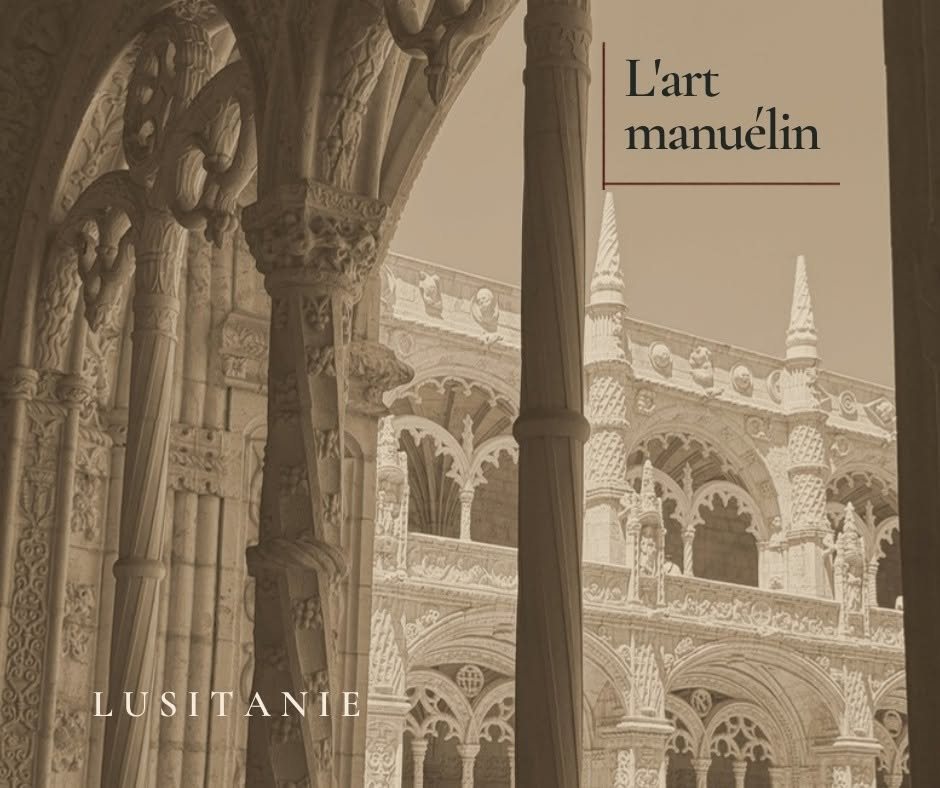

L'art manuélin
L'expression « style manuélin » ne date pas du règne qui lui a donné son nom.

On la doit à l'historien brésilien Francisco Adolfo de Varnhagen, qui l'employa en 1842 dans une notice sur le monastère des Hiéronymites. Elle désigne la production architecturale et décorative du Portugal sous Manuel Iᵉʳ (1495-1521), prolongée jusque dans les années 1530.
Les maîtres d'œuvre de l'époque conservent la voûte d'ogives, mais la complexifient : nervures en étoile, piliers élancés qui donnent aux églises-halles, aux nefs d'égale hauteur, une grande unité d'espace. À cette structure s'ajoutent des emprunts variés : l'art mudéjar pour certains arcs et décors géométriques, le plateresque espagnol, puis, à partir des années 1520, les premiers motifs de la Renaissance italienne.
C'est l'ornement qui a fait la réputation du style. Il combine l'emblématique royale (la sphère armillaire, devise personnelle du souverain, la croix de l'ordre du Christ, l'écu du royaume) et un répertoire naturaliste d'une grande densité : cordages torsadés, nœuds, chaînes, coraux, algues, troncs écotés, feuillages. Ces motifs ont souvent été lus comme un écho de l'aventure maritime, même si plusieurs d'entre eux circulaient déjà ailleurs en Europe.
Le monastère des Hiéronymites, à Belém, en est l'ensemble le plus abouti. Le chantier, ouvert en 1501 ou 1502 sous la direction de Diogo de Boitaca, fut repris à partir de 1517 par João de Castilho, à qui l'on doit la voûte de la nef et une large part du cloître. Il fut en grande partie financé par la « vintena da pimenta », un prélèvement de 5 % sur le commerce des épices. Boitaca avait auparavant élevé l'église de Jésus à Setúbal, souvent citée comme l'un des premiers édifices manuélins, avec ses colonnes torses qui évoquent des câbles.
D'autres œuvres complètent le corpus. La tour de Belém, construite entre 1514 et 1519 par Francisco de Arruda, mêle une silhouette encore médiévale à des échauguettes d'inspiration marocaine. Au couvent du Christ de Tomar, la fenêtre de la salle capitulaire, attribuée à Diogo de Arruda et datée vers 1510, concentre à elle seule presque tout le vocabulaire du style. À Batalha, Mateus Fernandes sculpta en 1509 le portail des chapelles inachevées, d'une virtuosité rarement égalée. Le palais national de Sintra conserve enfin plusieurs salles remaniées sous Manuel Iᵉʳ.
Après 1530, l'influence de la Renaissance classique s'impose et le manuélin disparaît. Il est redécouvert au XIXᵉ siècle, dans le contexte du romantisme et de la recherche d'une architecture nationale. Le néo-manuélin produit alors le palais de Pena à Sintra, la gare du Rossio à Lisbonne, le palace de Buçaco ou, outre-Atlantique, le Real Gabinete Português de Leitura de Rio de Janeiro.